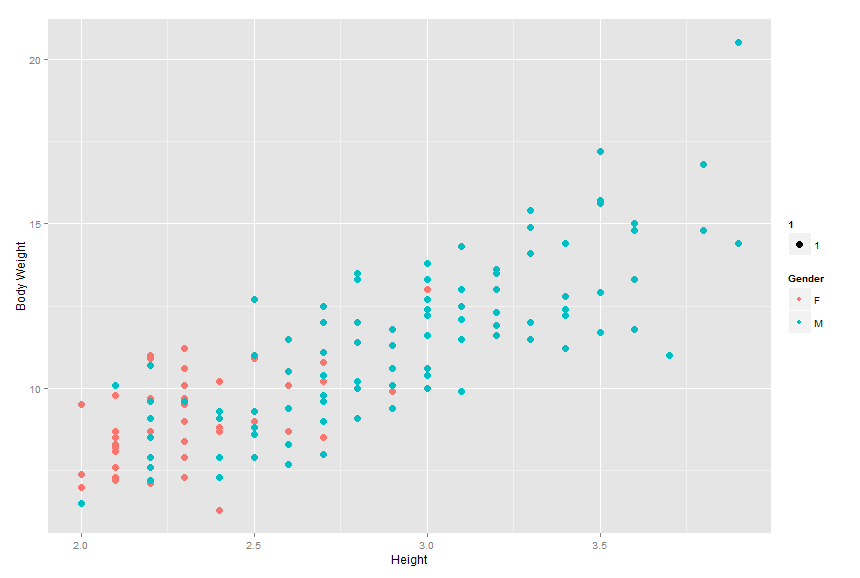

Classification
Classification problems refer to modeling and predicting qualitative responses, \(Y\), often denoted as classes or categories on observed predictors \(x\). Categories can refer to anything that is qualitative in nature, such as relationship status, gender, eye color, demographic information and more.
Classification techniques are generally known as classifiers, of which there are a variety of methods, including logistic regression, k-nearest neighbors, trees, boosting, and Linear and Quadratic Discriminant Analysis. For this exercise, we will focus on logistic regression as it is the most common and straightforward of the techniques mentioned earlier.
The Logistic Model
As one might expect, logistic regression makes ample use of the logistic function as it outputs values between 0 and 1 which we can use to model and predict responses. The log function is described as:
When dealing with multiple independent values, or x predictors, the function takes the form:
Estimating Coefficients
At this point, the coefficients \(\beta_0, \beta_1, \cdots, $\beta_2\) of the model are unknown, so we must estimate them in order to perform predictions. The estimation is done using maximum likelihood, due to its more general nature and statistical features.
To fit the model properly, we must make estimates for the coefficients that predictions are as close as possible to the originally observed value. Maximum likelihood in this case can be formalized:
With additional product terms added for each independent variable.
Performing Prediction
Using the original logistic function, the coefficient estimates gained from the maximum likelihood function are used with the observed data.
Example Logistic Regression Exercise
Consider a data set of 144 observations of household cats. The data contains the cats' gender, body weight and height. Can we model and accurately predict the gender of a cat based on previously observed values?
The data set ships with R and is named cats.csv. Instead of loading it directly into R with the load() function, I wanted to test a new package readr, which improves R's vanilla data import methods.
We start by loading some packages to help with the analysis, readr and caret
library(readr)
library(caret)
Loading required package: lattice
Loading required package: ggplot2
The first command loads the csv data using readr's read_csv function and stores it in the cats variable. we then attach the data and print a summary to give us a quick look at what the data shows.
cats <- read_csv("cats.csv")
Parsed with column specification:
cols(
Sex = col_character(),
Bwt = col_double(),
Hwt = col_double()
)
attach(cats)
summary(cats)
Sex Bwt Hwt
Length:144 Min. :2.000 Min. : 6.30
Class :character 1st Qu.:2.300 1st Qu.: 8.95
Mode :character Median :2.700 Median :10.10
Mean :2.724 Mean :10.63
3rd Qu.:3.025 3rd Qu.:12.12
Max. :3.900 Max. :20.50
Plotting the data, we can see there is indeed a strong relationship between the body weight and height of a cat and its gender. Interestingly, the graph appears to be linear in nature with male cats appearing mostly in the higher values of body weight and height while female cats are centered in the lower ranges. This is even further evidence body weight and height are predictors of gender as the higher the body weight and height, the more likely the cat is male.
plot <- ggplot(data=cats, aes(x=Bwt, y=Hwt, col=Sex.f))
plot <- plot + geom_point(aes(size = 5))
plot <- plot + xlab("Height") + ylab("Body Weight") +
scale_color_discrete(name = "Gender")
plot

To perform logistic regression, we need to code the response variables into integers. This can be done using the factor() function. We create a new variable to store the coded categories for male and female cats in the data frame to call later. You can check how R factorizes the categories by calling the contrasts() function.
Looking at the output, we can see R has assigned 0 for female and 1 for male.
cats$Sex.f <- factor(cats$Sex)
contrasts(cats$Sex.f)
M
F 0
M 1
To verify and test our model's performance, we first need to split our data into training and test sets. This is where the caret package comes in, its createDataPartition() function is extremely useful for splitting data into separate sets. Here, we split 60% of the data for training using our new factorized variable and the remaining 40% for testing.
inTrain <- createDataPartition(y = cats$Sex.f, p = .60, list = FALSE)
training <- cats[inTrain,]
testing <- cats[-inTrain,]
You can check how many observations are stored in the training and test sets by calling the dim() function, which outputs the dimensions of the desired set.
Calling this for the training and test sets contain four variables each with 88 and 56 observations, respectively.
dim(training)
[1] 88 4
dim(testing)
[1] 56 4
With the training and test sets ready, we can fit our logistic regression model. This is done by calling the glm() function, which takes for its arguments the function string, the data, and a family argument. We use the coded response variable (cat gender) as the y with Bwt (Body Weight) and Hwt (Height) as independent predictors. The data to use is set to the training set, and family is set to binomial to tell R to perform logistic regression.
The second command prints a handy summary of the fitted model's statistics. The coefficients table tells us Body Weight is the most significant predictor in determining a cat's gender, evidenced by the variables comparatively high z-value and low p-value. This shows us we can reject the null hypothesis, noted as \(p(x) = \frac{e^{\beta_{0}}}{1 + e^{\beta_{0}}}\), that the probability of a cat's gender does not depend on body weight.
Height appears to be a far less significant in determining a cat's gender, shown by a relatively low z-value and a high p-value. This makes sense as anecdotally adult cats' heights don't vary much depending on gender.
cats.fit = glm(Sex.f ~ Bwt + Hwt, data=training, family=binomial)
summary(cats.fit)
Call:
glm(formula = Sex.f ~ Bwt + Hwt, family = binomial, data = training)
Deviance Residuals:
Min 1Q Median 3Q Max
-2.0189 -0.8322 0.2665 0.8113 1.6155
Coefficients:
Estimate Std. Error z value Pr(>|z|)
(Intercept) -8.6331 2.2354 -3.862 0.000112 ***
Bwt 3.0266 1.0025 3.019 0.002537 **
Hwt 0.1370 0.2122 0.645 0.518669
---
Signif. codes: 0 '***' 0.001 '**' 0.01 '*' 0.05 '.' 0.1 ' ' 1
(Dispersion parameter for binomial family taken to be 1)
Null deviance: 111.559 on 87 degrees of freedom
Residual deviance: 82.403 on 85 degrees of freedom
AIC: 88.403
Number of Fisher Scoring iterations: 5
We now have a fitted model of the data in which to do predictions! How does our model perform against testing data though? We can check by building a confusion matrix to display the success rate of our model's predictions on the testing data we created earlier.
The first command using the predict() function performs prediction on a cat's gender based on the body weight and height data of the testing set. The type is set to 'response' to output probabilities.
The next command creates a vector of the 'F' (female category, denoted as 0 in coded set) according to the number of observations in the training data set. This is then converted into 'M' where the predicted probability is greater than 50%.
The table function builds the confusion matrix. Going diagonally, (21, 38) represent the number of correct predictions. Conversely, the going up diagonally, (8, 21) represent the number of incorrect predictions.
cats.prob = predict(cats.fit, testing, type="response")
cats.pred = rep("F", dim(training)[1])
cats.pred[cats.prob > .5] = "M"
table(cats.pred, training$Sex.f)
cats.pred F M
F 22 22
M 7 37
mean(cats.pred == training$Sex.f)
[1] 0.6704545
We can also call the mean() function to find the success rate of our predictions. The rate is 67%, representing an error rate of about 33%, and is therefore much more accurate than random guessing.
mean(cats.pred == training$Sex.f)
[1] 0.6704545
1 - mean(cats.pred == training$Sex.f)
[1] 0.3295455
Now that we know the model can predict more accurately than simply guessing, we can make predictions of cats' gender on new data. Again we call the predict() function but this time new data is entered for both Bwt and Hwt. These are set as (x, y) pairs; for example the first cat has a body weight of 2.8 and a height of 13.
Our model shows the first cat has a 92% probability of being male, while the second cat has a 19% probability of being male, or, an 81% chance of being female.
predict(cats.fit, newdata=data.frame(Bwt=c(2.8, 1.8), Hwt=c(13, 7)), type="response")
1 2
0.8350371 0.0973901
Earlier we noted height was not a significant predictor of a cat's gender due to its high p-value and low z-value. Does the model results improve if we just use body weight as a predictor?
We fit a new model using the coded y data with just Bwt as a predictor. The data set and family remain the same.
cats.fit = glm(Sex.f ~ Bwt, data=training, family=binomial)
summary(cats.fit)
Call:
glm(formula = Sex.f ~ Bwt, family = binomial, data = training)
Deviance Residuals:
Min 1Q Median 3Q Max
-2.0538 -0.8808 0.2875 0.8061 1.6601
Coefficients:
Estimate Std. Error z value Pr(>|z|)
(Intercept) -8.2444 2.0919 -3.941 8.11e-05 ***
Bwt 3.4080 0.8207 4.153 3.28e-05 ***
---
Signif. codes: 0 '***' 0.001 '**' 0.01 '*' 0.05 '.' 0.1 ' ' 1
(Dispersion parameter for binomial family taken to be 1)
Null deviance: 111.559 on 87 degrees of freedom
Residual deviance: 82.828 on 86 degrees of freedom
AIC: 86.828
Number of Fisher Scoring iterations: 5
The confusion matrix using the new model shows classifications are very similar to the original model. Also, the computed success rate of the prediction is the same.
cats.prob = predict(cats.fit, testing, type="response")
cats.pred = rep("F", dim(training)[1])
cats.pred[cats.prob > .5] = "M"
table(cats.pred, training$Sex.f)
cats.pred F M
F 22 22
M 7 37
mean(cats.pred == training$Sex.f)
[1] 0.6704545
Using the predict() function on the same body weights we previously predicted, we can see the probability of the cats being male is relatively similar compared to the previous model. Therefore, we can reasonably assume that although Height does not have as much predictive 'power' as Body Weight, it does not negatively impact the results and fitting of the model.
predict(cats.fit, newdata=data.frame(Bwt=c(2.8, 1.8)), type="response")
1 2
0.7855190 0.1081379
Related Posts
- Tukey's Test for Post-Hoc Analysis
- Kruskal-Wallis One-Way Analysis of Variance of Ranks
- Calculating and Performing One-way Multivariate Analysis of Variance (MANOVA)
- Calculating and Performing One-way Analysis of Variance (ANOVA)
- Computing Working-Hotelling and Bonferroni Simultaneous Confidence Intervals